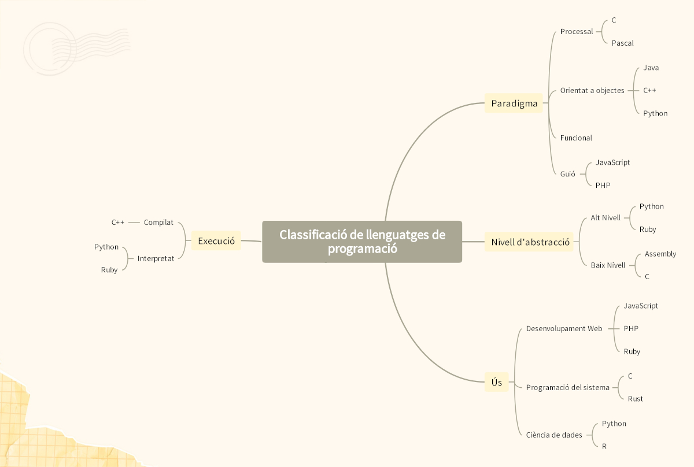

RA15 Classifica els llenguatges de programació, identificant-ne les característiques.
Tipus de llenguatges de programació
Existeixen formes diferents de classificar els llenguatges de programacio, com dividir-los entre orientats a objectes, funcionals, imperatius i logics, pero en aquest cas els dividirem en llenguatges de baix nivell, alt nivell i especialitzats. Nosaltres dividirem els llenguatges en 3 tipus: baix nivell, alt nivell i especialitzats. detallant tambe subdivisions com llenguatge maquina i ensamblador i els llenguatges d'alt nivell esdevenint en practicament tots sent orientats a objectes.
- Baix nivell: Els llenguatges de baix nivell són aquells que es troben més propers al maquinari i que requereixen un coneixement profund de l'arquitectura de l'ordinador.
- Alt nivell: Els llenguatges d'alt nivell estan dissenyats per facilitar la programació als humans, utilitzant una sintaxi més comprensible i abstracta en comparació amb els llenguatges de baix nivell. La gran majoria dels llenguatges d'alt nivell son tots orientats a objectes. La orientació a objectes es caracteritza per 3 elements:
- Especialitzats: Aquests llenguatges estan dissenyats per a funcions específiques en determinats sectors.
A dia d'avui el llenguatge maquina ja no s'utilitza en absolut, i lo mes normal es veure ensamblador, que es mes comprensible per als programadors que el llenguatge màquina, mantenint un control mes extens sobre el maquinari que els llenguatges d'alt nivell.
Encapsulació: Protegeix les dades dins d'un objecte.
Herencia: Permet que les classes heretin propietats d'una altra, permetent la reutilització eficient de codi.
Polimorfisme: Permet que diferents objectes responguin de manera diferent a la mateixa crida de metode, fent el codi mes flexible.
Dins d'aquests llenguatges estan els de quarta generació (4GL), que sovint s'utilitzen principalment per aplicacions CRM i altres usos comercials.

Baix nivell
- Assembler
- Alt rendiment i eficiència.
- Directament relacionat amb l'arquitectura del processador.
- Molt difícil de llegir i mantenir.
- C
- Considerat de baix nivell per la seva proximitat al maquinari.
- Alt rendiment i ús en sistemes operatius i firmware.
- Gestió manual de memòria.

Alt nivell
-
Java
- Tipat estàtic: Els tipus de dades de les variables es defineixen en temps de compilació.
- Distribuït: Facilita la creació d'aplicacions que s'executen en múltiples sistemes connectats en xarxa.
- Arquitectura neutral: No depen d'una arquitectura de maquinari específica, ja que es compilen en bytecode, que pot ser executat per qualsevol JVM sense importar el sistema operatiu o el processador.
-
Python
- Sintaxi senzilla: cosa que el fa més fàcil d'aprendre i utilitzar.
- Tipatge dinàmic: no cal declarar el tipus de les variables explícitament.
- Multiplataforma: Es pot executar en qualsevol màquina.
-
C++
- Alt rendiment i control de memòria: Permet una gestió manual de la memòria amb operadors com new i delete, cosa que li proporciona un alt rendiment.
- Programació multiparadigma: Combina diversos paradigmes cosa que el fa extremadament flexible (Procedimental, objectes, metaprogramació, funcional).
- Accés directe al maquinari: Permet una interacció directa amb el maquinari i les API de baix nivell.
-
C#
- Extensions de C amb orientació a objectes.
- Útil en aplicacions de rendiment alt com videojocs i motors gràfics.
- Complexitat més gran.

Especialitzats
- JavaScript
- Principal llenguatge per al desenvolupament web (client-side).
- Pot treballar també en backend amb Node.js.
- SQL
- Llenguatge per a bases de dades relacionals.
- Ús principal en consultes i gestió de dades.
- Swift
- Desenvolupament d'aplicacions per a iOS i macOS.
- Sintaxi clara i seguretat en memòria.
- Go (Golang)
- Creat per Google, eficient i amb concurrència nativa.
- Bona alternativa a C/C++ en serveis escalables.
MAPA CONCEPTUAL DE LA INFORMACIÓ
